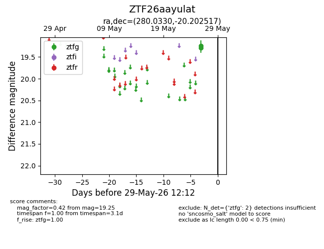
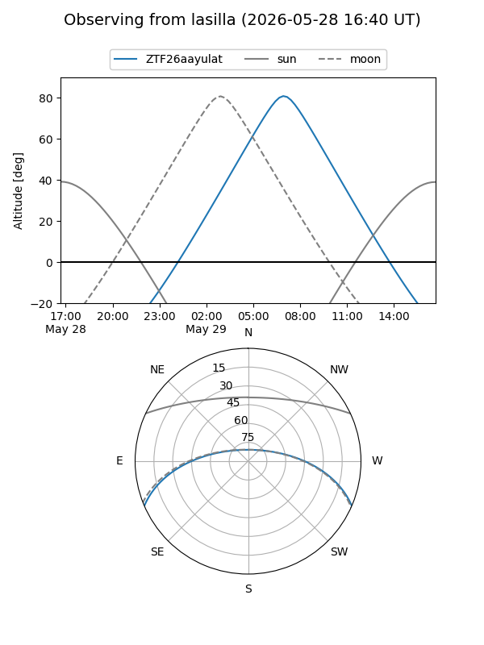
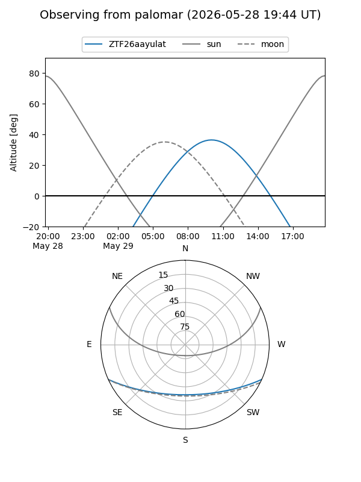

ZTF26aayulat
Target ZTF26aayulat at 2026-05-29 12:16
Aliases and brokers:
lsst-FINK: link
lsst-Lasair: link
lsst-ALeRCE: link
ztf-FINK: link
ztf-Lasair: link
ztf-ALeRCE: link
alt names
ZTF26aayulat (ztf,fink_ztf)
Coordinates:
equatorial (ra, dec) = 280.0330,-20.20252
equatorial (HMS+DMS) = 18:40:07.92,-20:12:09.06
galactic (l, b) = (13.6211,-6.67763)
Flags:
Photometry:
last ztfg=19.25
2 ztfg detections
Lightcurve

Visibility


Additional plots